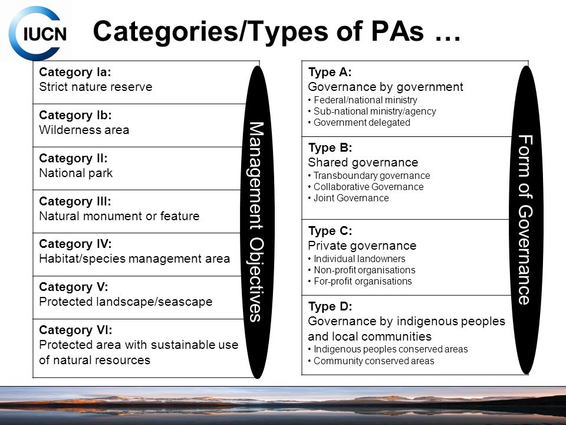
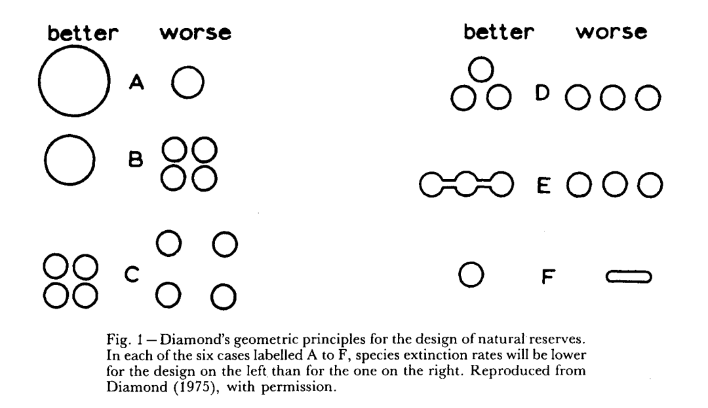
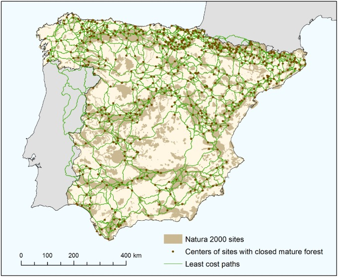
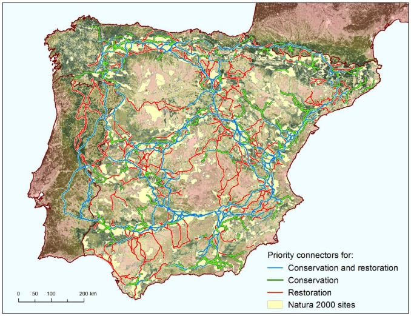
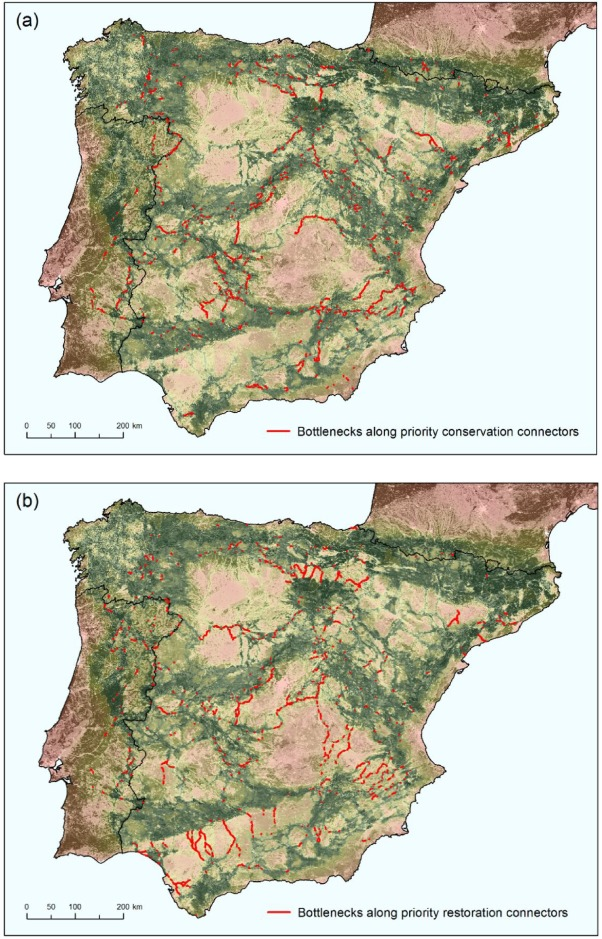
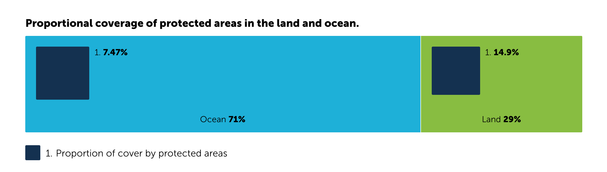
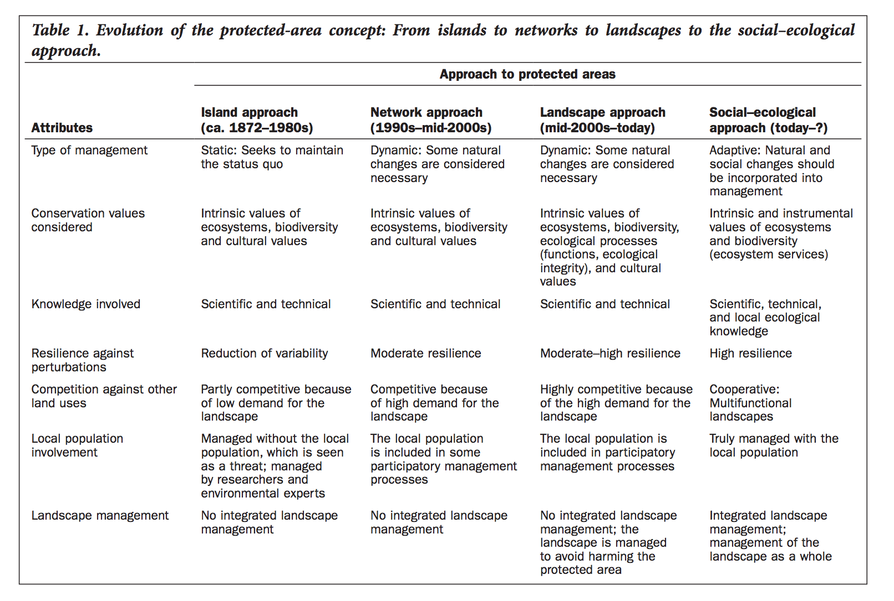
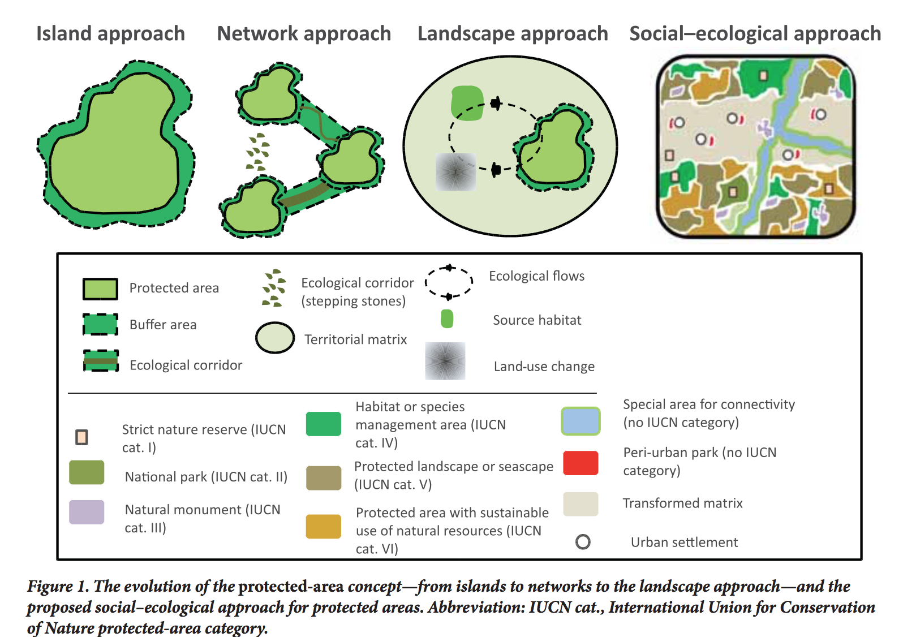

- Biogeografía de islas y ENPs
- ¿Qué es un espacio natural protegido?
- Un área delimitada del espacio en la que se prioriza el mantenimiento de sistemas naturales.
-
- 
- Surge en el siglo XIX en Estados Unidos
- Conservar espacios inalterados frente al avance humano.
- Conservar paisajes.
- ¿Por qué se crean?
- Defensa de la naturaleza
- Protección frente a los impactos
- Reserva de caza
- Reserva de paisaje
- Filosofía subyacente -> Trincheras de lo natural
- Aquí entra la biogeografía de islas
- Ya que vamos a construir trincheras, hagámoslo lo mejor posible...
- 
- Ejemplos de "aplicación" de esta filosofía
-
- Red de espacios protegidos de España
(Red Natura 2000) y corredores potenciales- 
- Tipos de corredores identificados
- 
- Cuellos de botella
- 
-
- ¿Cómo se gestionan?
- Planificación
- Plan de ordenación de los recursos naturales
- Plan rector de uso y gestión
-


- Nota: Recordad la forma de esta gráfica para cuando hablemos de la "gran aceleración"
- 
- ¿Cumplen su función?
- Conservación de la naturaleza
- En principio sí, pero aún no tenemos
evidencias contundentes y generales
- Mejora de las condiciones de vida de sus habitantes
- Igualmente hay situaciones diversas
- Empeoran las condiciones
- Expulsión de indígenas
- Restricción de actividad económica
- Mejoran las condiciones
- ¿Alternativas?
- Espacios protegidos como laboratorios para aprender
a gestionar los recursos naturales y exportar la experiencia
al resto del territorio - Restauración ecosistémica
-
- 
- 